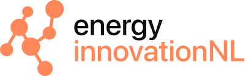

Deze website is onderdeel van de actualisatie van het rapport ‘Data governance en data delen in het energiedomein’ dat is opgesteld in opdracht van RVO voor Energy Innovation NL op verzoek van het programma Digitalisering. Heb je interesse in het rapport? Neem dan contact op met Energy Innovation NL, programmamanager Digitalisering.
De website en het rapport zijn ontwikkeld en geschreven door Contakt Consulting in Q1/Q2 2026.
